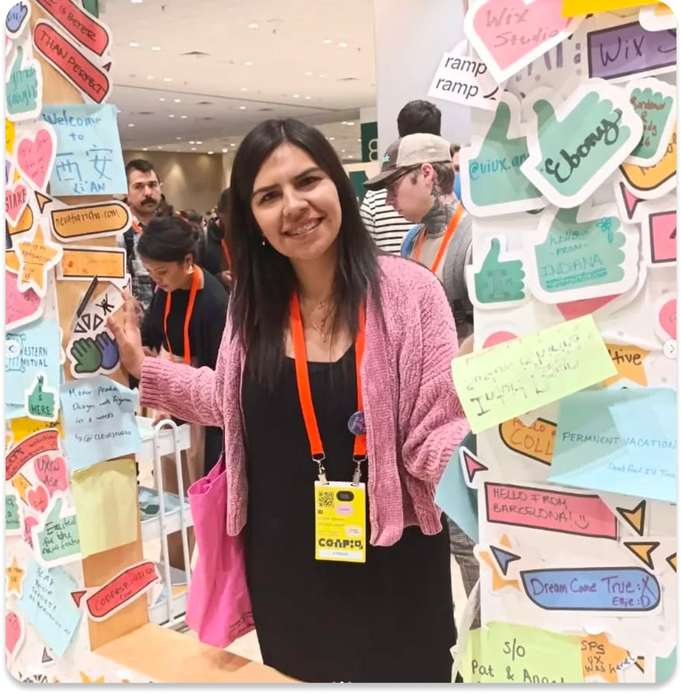
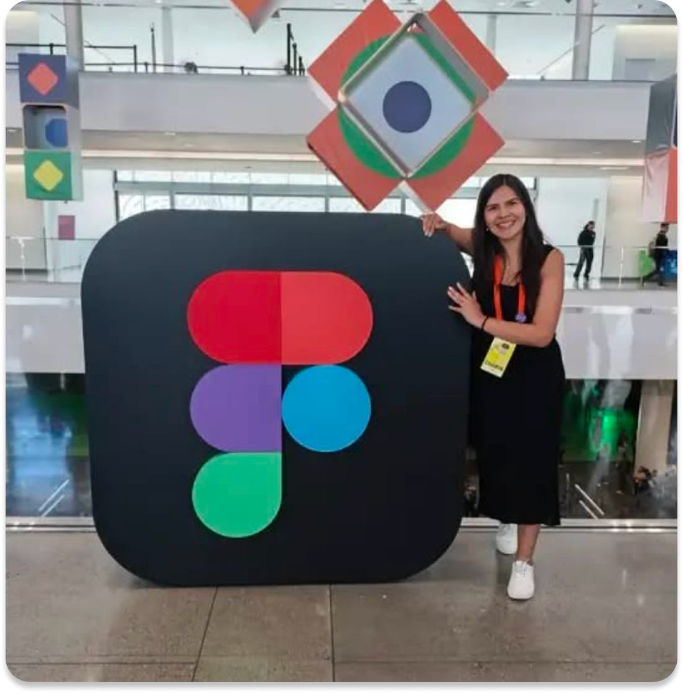
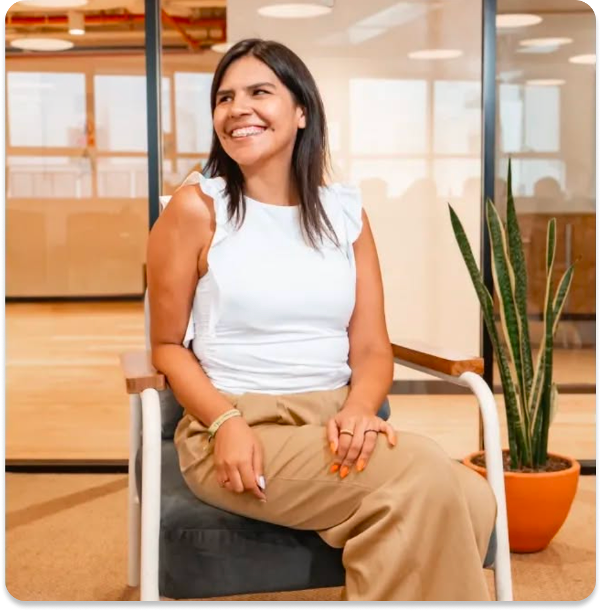
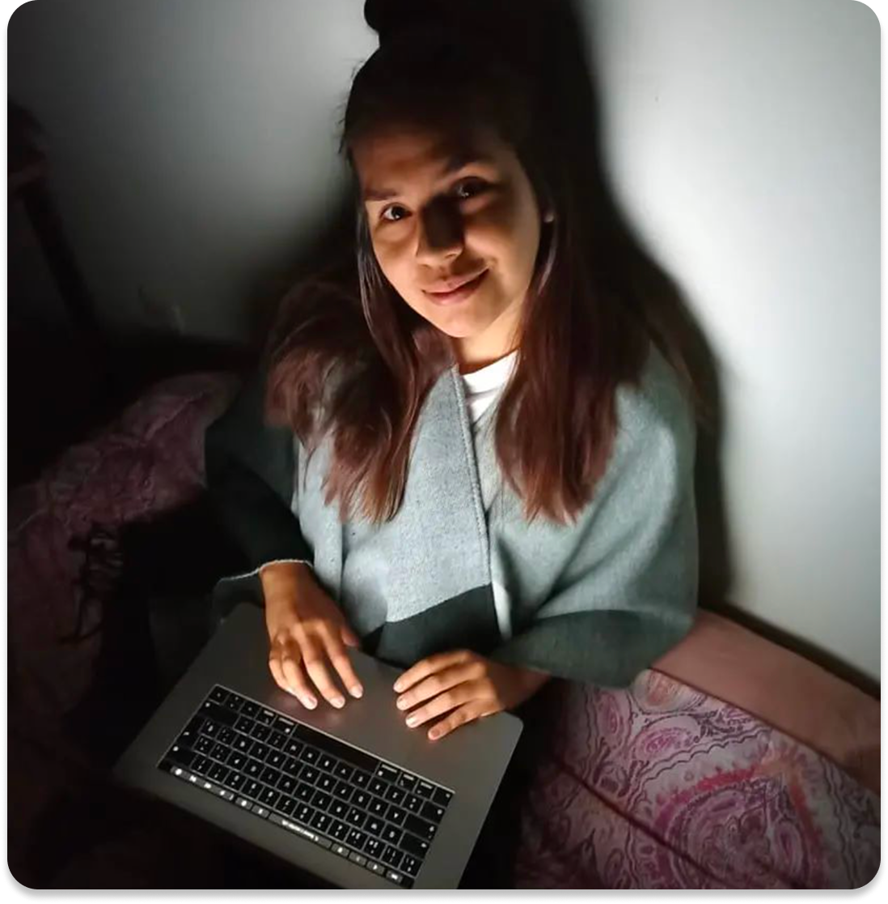

Product & Service Designer con foco en Design Systems para productos B2B/B2C complejos — seguros y fintech. Actualmente lidero la evolución del sistema de diseño corporativo en Pacífico Seguros.
Vengo de la docencia artística y el teatro, de ahí mi enfoque narrativo: cada sistema que construyo busca contar una historia clara entre negocio y usuario, no solo resolver una pantalla.

Evolución y escalamiento del sistema de diseño corporativo, asegurando consistencia en 15+ productos digitales. Colaboración directa con stakeholders C-level para definir roadmaps de producto y estrategias de experiencia del usuario. Implementación de metodologías de testing que han resultado en mejoras significativas en KPIs de negocio.
Desarrollé y gestioné el sistema de diseño corporativo, creando un inventario de 50+ componentes reutilizables que redujo el tiempo de desarrollo en 40%. Lideré el rediseño completo de las plataformas de seguros de vida y autos, con investigación de usuarios y análisis de datos que resultaron en un incremento del 25% en conversiones. Diseñé y optimicé journey maps de venta asistida, mejorando la eficiencia del proceso.
Mentoría y acompañamiento a nuevos talentos UX en metodologías de investigación y diseño centrado en usuario. Desarrollo de casos de estudio reales aplicados al sector agrícola y tecnología rural.
Dirigí investigación etnográfica en 3 regiones (Piura, Huánuco, Cajamarca), desarrollando segmentación de productores agrícolas. Construí flujos conversacionales basados en DCU para un chatbot que asesoró a agricultores sobre clima, precios de mercado y consultas agronómicas, alcanzando 5,000+ usuarios activos. Diseñé la experiencia completa de la app de registro de agricultores y parcelas (storyboards y user journeys), y creé la estrategia de contenido segmentada por tipo de productor.


